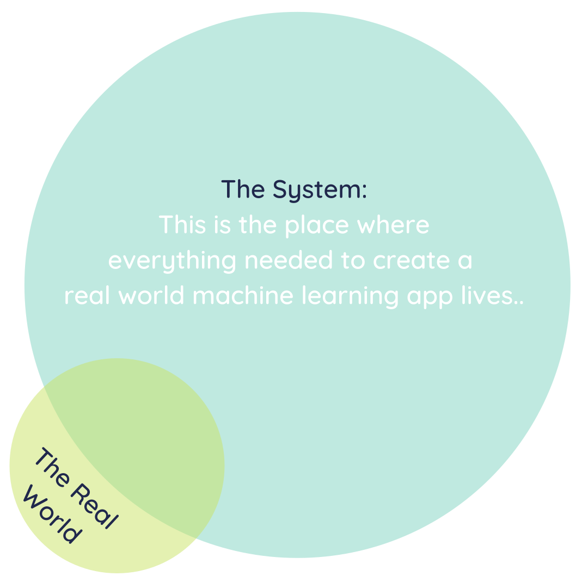
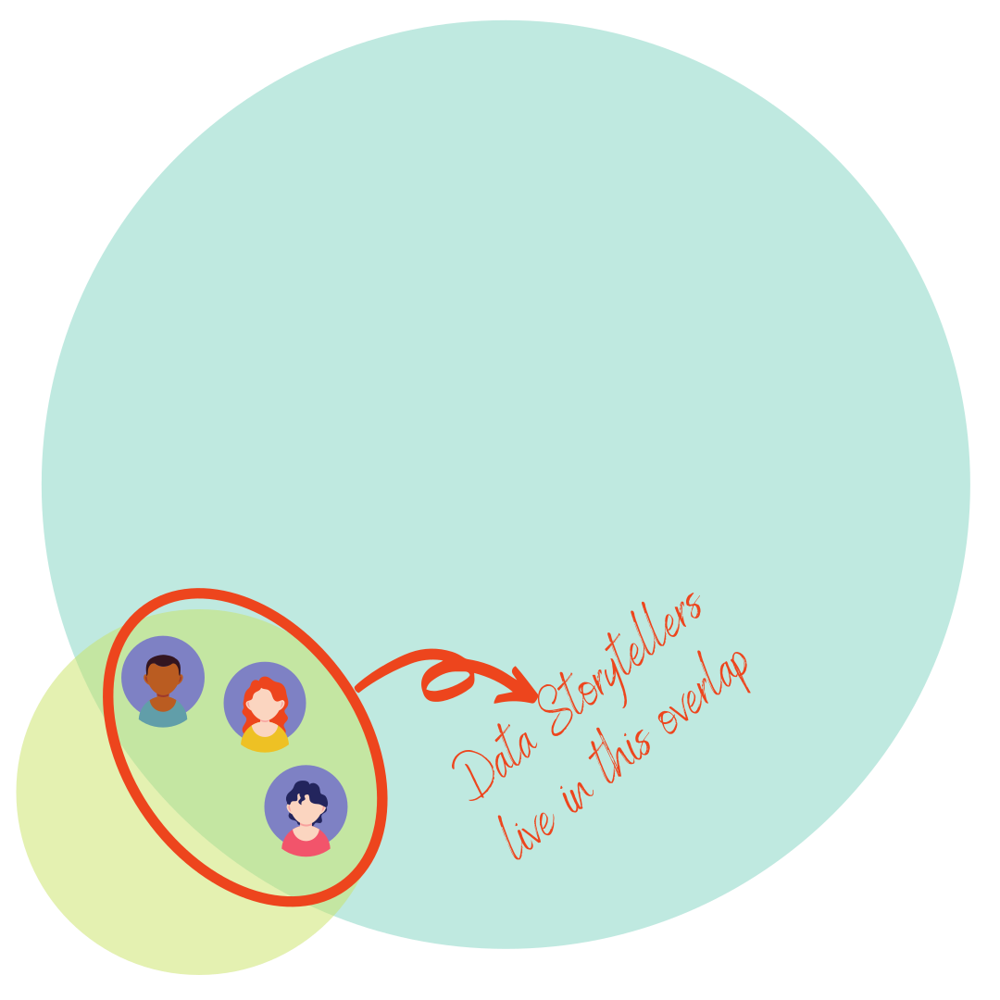

Real world machine learning
Contents
Real world machine learning¶
Real world data (aka data in the wild) tends to be messy, unstructured and sporadically captured. As such, it is not enough to know about computer vision, natural language processing, data storytelling and data pipelining concepts, we need to actually apply them.
Having static data pipelining, computer vision and natural language processing is enough to build a sophisticated robot. However, this robot will need tons upon tons of data to be cleaned and organized by humans before it even comes to be. However, because of the nature of real world data, the output of our robot will still need to be corrected by humans, even as its mechanical parts are serviced by humans.
To complement the two applied areas of machine learning, we need data storytelling and dynamic data pipelining. Deploying machine learning models into the world can be incredibly complex, but nothing beats trying to
identify concept and model drift
systematically analyze error and optimize models
explain how everything works to key stakeholders to build trust
add new data sources into the data pipeline and removing ‘stale’ data
teach new people how to use the application housing the model
AT THE SAME TIME.
This can get very complicated, as shown in the visual below:

\(\includegraphics[scale=0.5]{./images/system.svg}\)
So let’s break it down.
The Break Down¶
The environment¶
Impactful machine learning has to incorporate both real world perspectives and technical expertise. It can be visualized as shown below:

Naturally, there is a need to bridge the gap between
people in the real world using the product (with no idea of what’s going on under the hood) and
technical people involved in the construction and maintenance of the machine learning system
This is where data storytelling comes in.
Data storytelling¶
By using teaching techniques, stylistic devices (e.g. narrative, humour etc.) and great design (especially for data visualizations), data storytellers are able to help non-technical users identify
how the app would fit into their day-to-day,
what restrictions they need to protect their privacy and
what improvements they would need for the machine learning app to be used more intuitively
Once user requirements are obtained, data storytellers translate them into technical requirements, so that the user controls the machine learning app, not the other way round.
This is visualized below:

Data storytellers can include infographic creators, data scientists, data analysts, statisticians and BI (Business Intelligence) developers.
A question then arises: How exactly will these requirements be implemented?
This is where data pipelining comes in.
Data pipelining¶
To get valid results that can be valid stories, we need to make sure that the data on which the modelling is based is clean: that is:
approved by a domain expert
statistically validated
tracked as it undergoes transformation
organized as much as possible, once it enters the system
having complete metadata (data explaining characteristics of the data)
As they say: garbage in, garbage out. If the data is fed directly into the models in a haphazard manner; troubleshooting what went wrong or trying to explain the output given by the ML app becomes a nightmare. Enter data pipelines - A smooth way to
ensure data lineage (having different labeled versions of the data as its being transformed, with the labels describing the various transformations in detail)
ensure data provenance (having metadata that explains the context around data collection, the characteristics of the various data sources and a high level explanation of the data transformation)
establish best practices to clean and standardize data
strengthen data security (due to the tracking) and quickly detect any data breaches if they were to occur
This is illustrated by the pipes in the image below:

Data pipeliners typically include IT, backend developers, machine learning engineers, data scientists and database administrators.
Now that the data infrastructure is in place, now we can enter into machine learning territory.